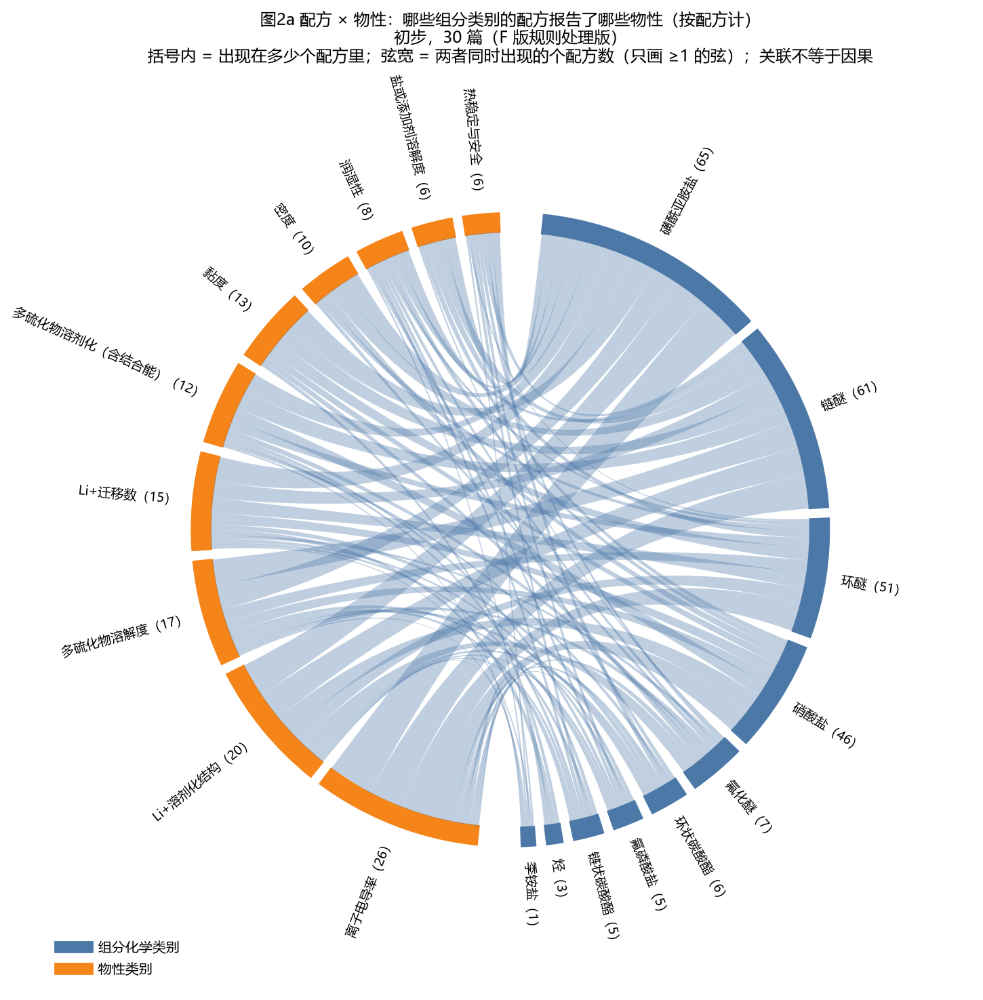
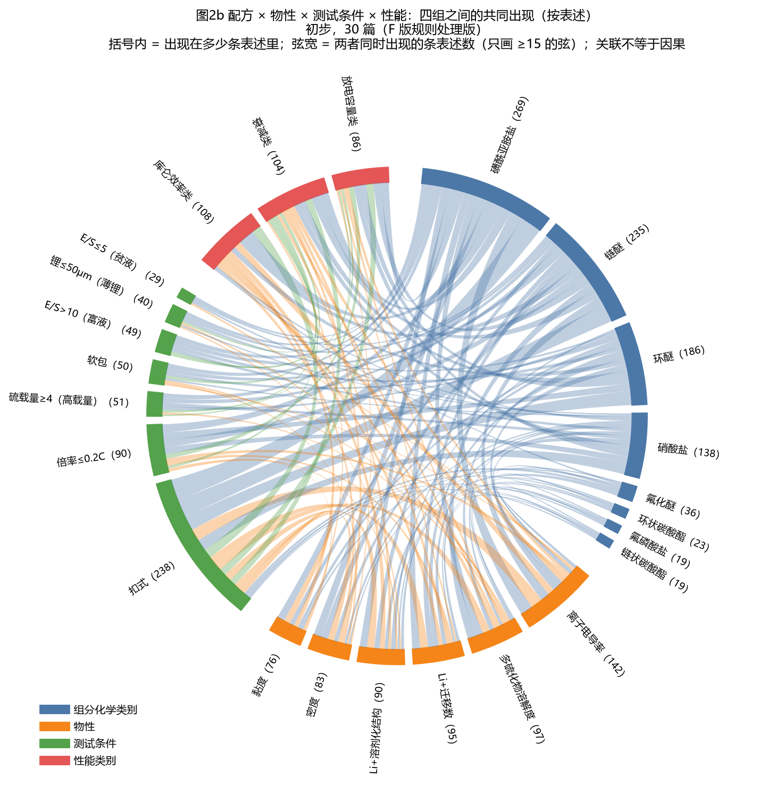

四张图都标“初步，30 篇（F 版规则处理版）”。图形只表示关联，不证明因果；疑似重复的表述每组只计一次。
图1a 配方组分共现网络（只看配方）
每个点是一个组分，点越大用到它的配方越多；两点之间的线表示它们出现在同一个配方里，线越粗次数越多。鼠标停在点或线上看数字，可拖动、缩放。（新窗口打开）
图1b 组分＋物性＋条件＋性能共现网络
四种颜色的点分别是组分、物性、条件档（如“E/S≤5（贫液）”）、性能档（归一化到普遍条件后，同一类里三等分：好/中/差）。线 = 两者同时出现在多少条表述里（只画 ≥10 条的）。（新窗口打开）
图2a 弦图：配方 × 物性
左边一圈是组分化学类别，右边是物性类别；弦表示“含这类组分的配方报告了这项物性”（按配方计）。能看出哪些体系的物性测得多、哪些是空白。

图2b 弦图：配方 × 物性 × 测试条件 × 性能
四组弧：组分类别（蓝）、物性（橙）、测试条件（绿，只选贫液、高载量、软包、薄锂等关键档）、性能类别（红）。弦宽 = 两者同时出现的表述数（只画 ≥15 条的）。

图3 聚类热图：配方 × 物性 × 条件 × 性能
每行一个配方（需能算元素比例且有归一化性能值），列分四块，用竖线隔开。颜色是标准化后的值（红高蓝低），灰 = 未报告或外推。行顺序按层次聚类排列。性能列是归一化到普遍条件后的值，可以跨篇比较；“篇内相对对照”两列是同篇比值。（新窗口打开）
图4 表述文字向量图
把每条表述的完整文字变成向量（字符片段统计，不是语义模型），再压到二维；越近的点文字越像。右上角可切换按性能类别、论文、电池类型着色，鼠标停在点上看整条表述。（新窗口打开）